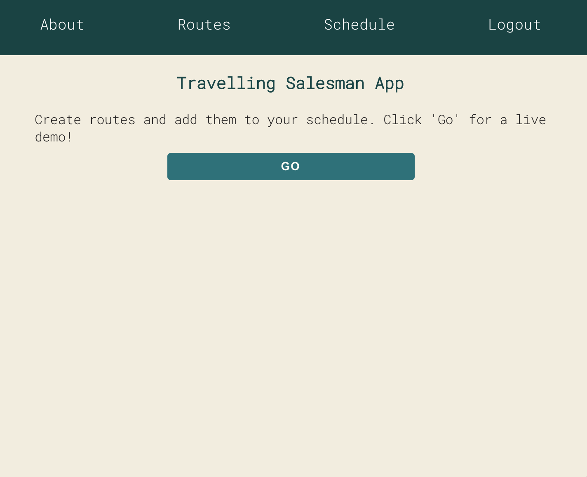
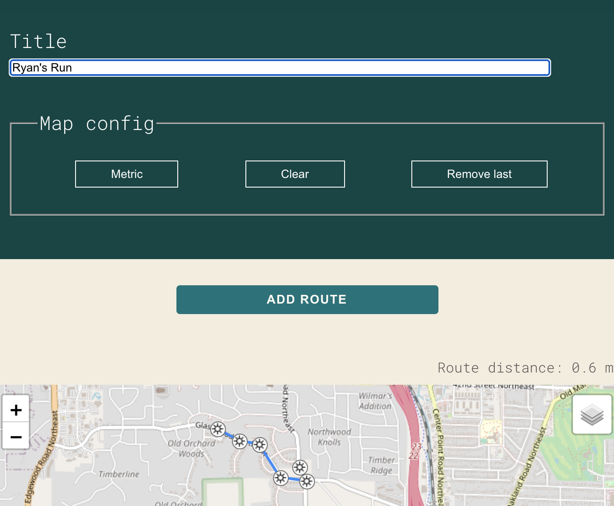
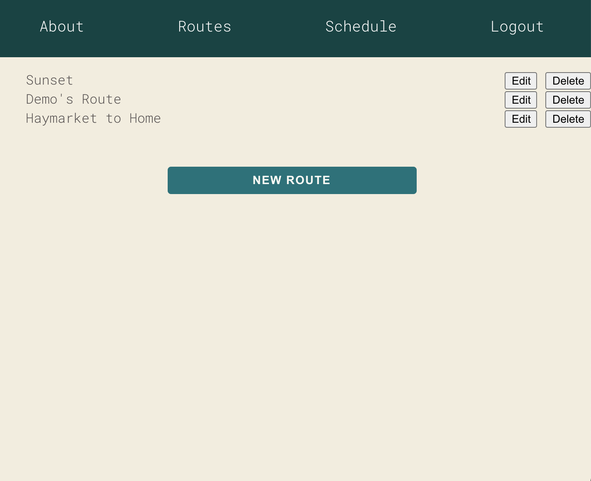
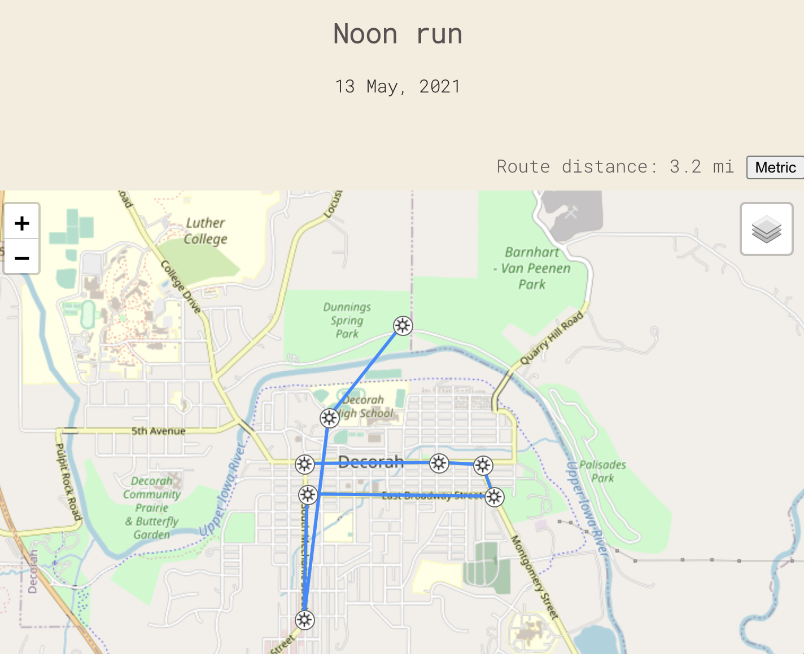
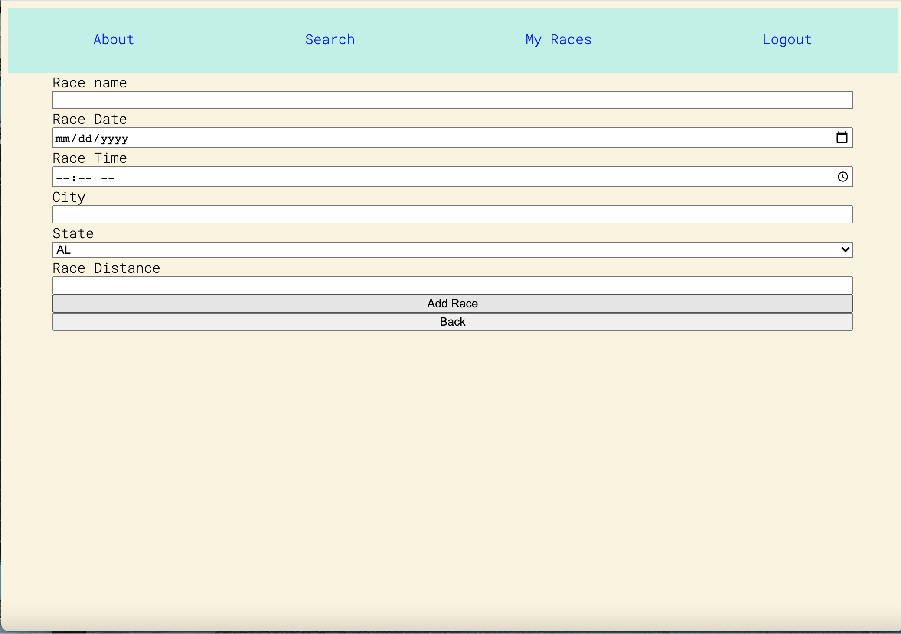
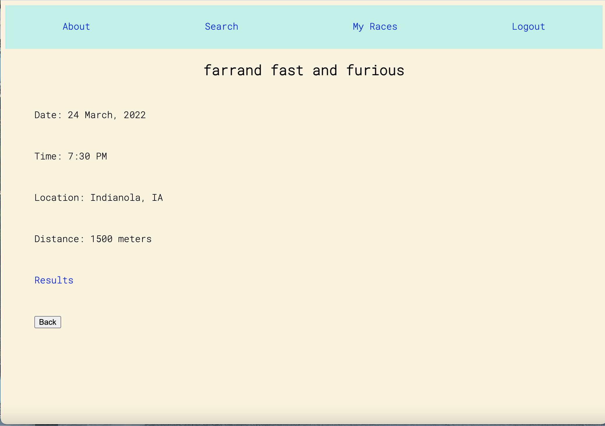
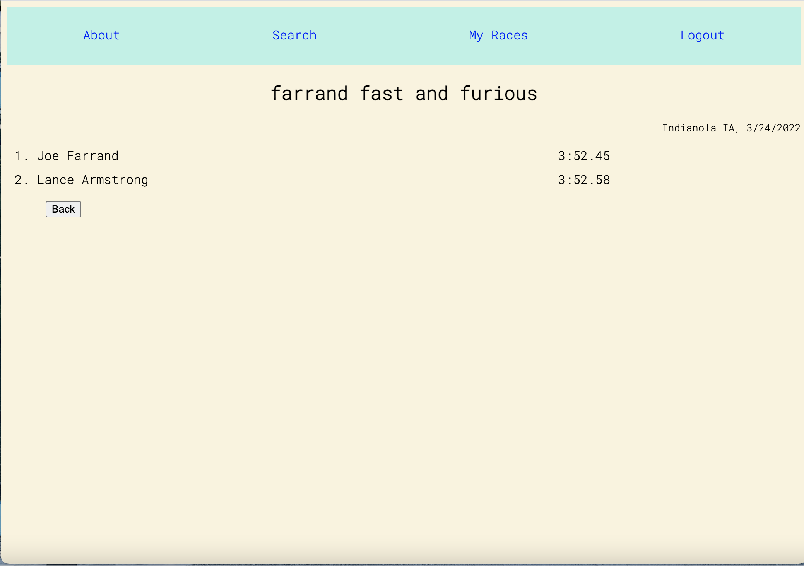
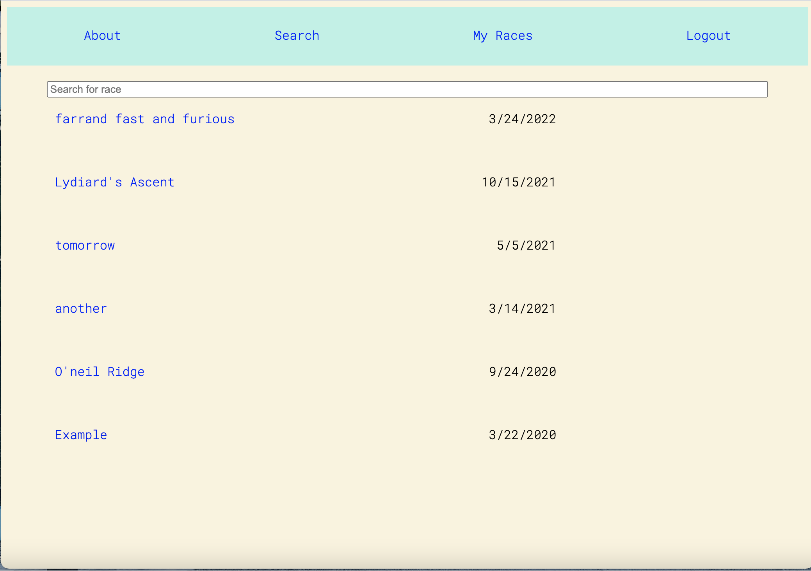
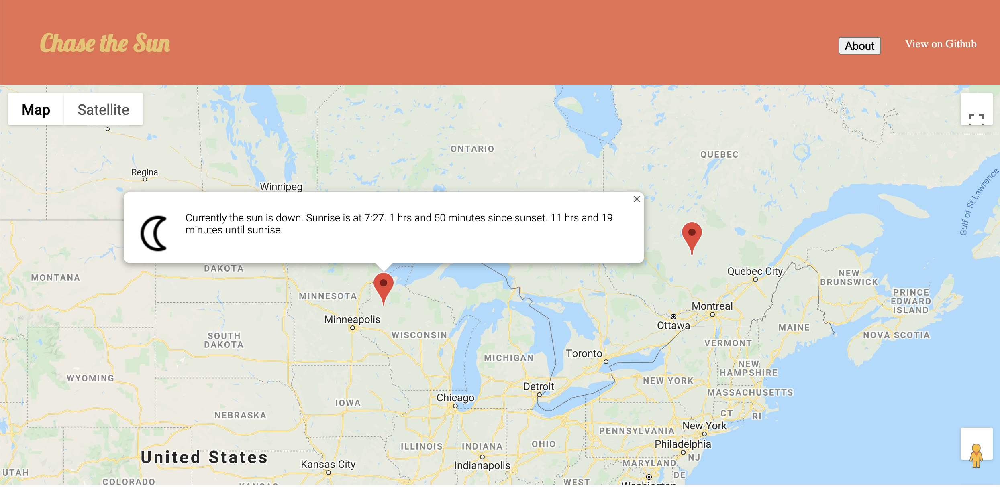
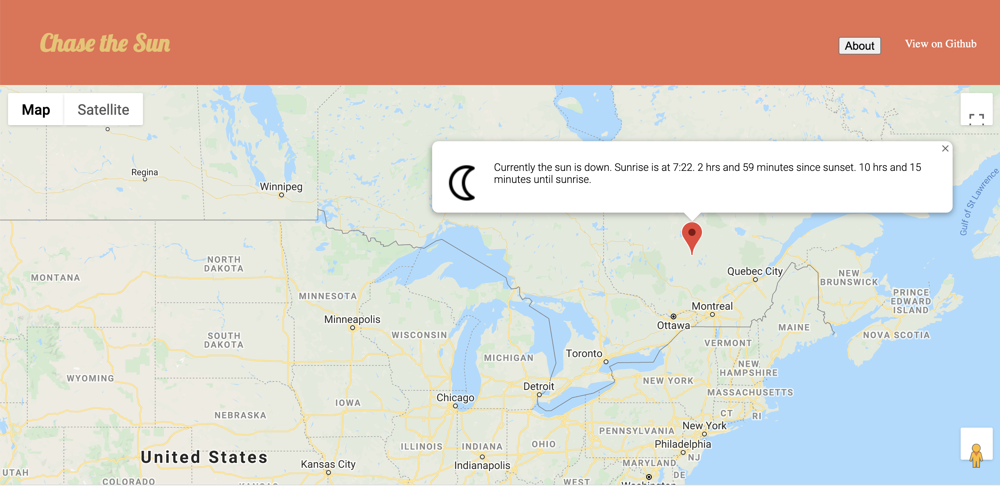

Intro
I am a software developer living in Decorah, Iowa. I'm currently enrolled in Thinkful's
Software Engineering Flex program and am employed as an assistant cross country and track and field
coach at Luther College.
I have experience creating full stack web apps using React and Node. You can see some of my work below
About Me
I am excited to progress as a developer and work on a diverse set of projects. The act of writing
code--an abstract thing that accomplishes a practical, however mundane, task--is thrilling.
Some of my interests not necessarily related to coding include math (MS Northern Arizona University
2017), distance running, gravel biking, and reading books. If my interests have a unifying theme, it
is exploration. I love to explore places and ideas, both near and far, old and new.
I am eager to hear about any interesting projects. I've been on teams for most of my life and I am
excited to work with other developers. If you want to connect or collaborate, please feel free to contact me.
Here are some services I can provide:
- Freelance projects
- JavaScript
- React
- NodeJS
- PostgreSQL
- Express
Projects
Travelling salesman
The Travelling Salesman app allows the user to create an account and then create routes using an interactive map. The user is then able to add routes to their schedule. I created this to teach myself how to make an app with React Leaflet that allows users to create routes.
Technologies
- React
- NodeJS
- Express
- PostgreSQL
- React Leaflet
You can view the live app here.
You can view the code here.




Race Director
The Race director app allows the user to create an account and start creating races with basic information
(date, start time, distance, city, state, etc). Users can add manage results for the races they create as well as view other users' races. I built this because I wanted to provide an easy way to share races and race results.
Technologies
- React
- NodeJS
- Express
- PostgreSQL
You can view the live app here.
You can view the code here.




Chase the Sun
The Chase the Sun app allows users to click on a map and see what the sunrise and sunset times are, as well as the time until sunrise or sunset. I made this in order to gain experience using different APIs.
Technologies
- JQuery
- Google Maps APIs
- HTML
- CSS
You can view the live app here.
You can view the code here.


Contact
I would love to connect! Don't hesitate to contact me.